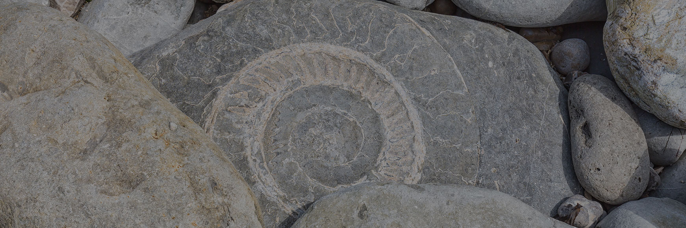

Science Topics
- Organism Structures and Behavior
- Changes Over Time to Earth's Surface and Resources
- Using Energy Transformations
- Communicating Using Wave Energy
Welcome to Fourth Grade Science! In this class, students are given the opportunity to do hands-on exploration of science concepts that help broaden their understanding of how the world works. Students are encouraged to ask questions, make mistakes, and investigate as they engage in the learning process. By the end of the school year, students have become expert scientists!

My name is Tanya Buechel and I have been teaching fourth grade Science for three years. I graduated from Southern Illinois University with a degree in Elementary Education with science, social science, and language arts endorsements. I live in Troy, Illinois with my family. I have two children, Nathan and Nolan, and a dog named Lemmy.
A typical day in class begins with a vocabulary review over science terms. Each student has a science binder inside of the classroom, where they keep their Science Journal for the concept we are learning. Each science topic is broken down into many different lessons that follow the 5E instructional model (Engage, Explore, Explain, Elaborate, Evaluate). In fourth grade, students are introduce to CERs (Claim, Evidence, Reasoning), where they must write scienific explanations for the concepts they are learning, and back up their explanations with sound evidence.